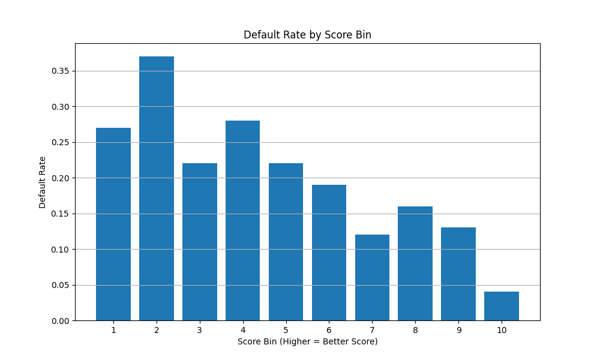

Scoring Model Validation
The scoring_model_validation function provides a comprehensive set of metrics and visualizations to evaluate the performance of credit scoring models. This is a critical step in model development to ensure that your scoring system effectively discriminates between good and bad customers.
Purpose
Credit scoring model validation serves several key purposes:
- Assessing the model's discriminatory power
- Measuring the separation between good and bad customers
- Evaluating the predictive strength of the model
- Analyzing the relationship between scores and default rates
- Providing insights for setting appropriate cutoff thresholds
Usage in Pypulate
from pypulate.credit import scoring_model_validation
# Validate a scoring model
validation_results = scoring_model_validation(
predicted_scores=scores_array, # Array of predicted scores
actual_defaults=defaults_array, # Array of actual default outcomes (0/1)
score_bins=10 # Number of score bins for analysis
)
# Access validation metrics
auc = validation_results['auc']
gini = validation_results['gini']
ks_statistic = validation_results['ks_statistic']
information_value = validation_results['information_value']
concordance = validation_results['concordance']
# Access ROC curve data
fpr = validation_results['roc_curve']['fpr']
tpr = validation_results['roc_curve']['tpr']
thresholds = validation_results['roc_curve']['thresholds']
# Access bin analysis
bin_analysis = validation_results['bin_analysis']
Parameters
| Parameter | Type | Description | Default |
|---|---|---|---|
predicted_scores |
array_like | Array of predicted scores or probabilities | Required |
actual_defaults |
array_like | Array of actual default outcomes (0/1) | Required |
score_bins |
int | Number of score bins for analysis | 10 |
Return Value
The function returns a dictionary with the following keys:
| Key | Type | Description |
|---|---|---|
auc |
float | Area Under the ROC Curve |
gini |
float | Gini coefficient (2*AUC - 1) |
ks_statistic |
float | Kolmogorov-Smirnov statistic |
information_value |
float | Information Value (IV) |
concordance |
float | Concordance rate |
roc_curve |
dict | Dictionary containing ROC curve data |
bin_analysis |
list | List of dictionaries with bin-level statistics |
The roc_curve dictionary includes:
- fpr: False positive rates
- tpr: True positive rates
- thresholds: Threshold values
The bin_analysis list contains dictionaries with the following keys for each bin:
- bin_number: Bin number
- min_score: Minimum score in the bin
- max_score: Maximum score in the bin
- count: Number of observations in the bin
- default_rate: Default rate in the bin
- cumulative_good: Cumulative percentage of good customers
- cumulative_bad: Cumulative percentage of bad customers
- ks: KS statistic at this bin
Risk Level Classification
The key validation metrics are categorized into performance levels:
| Metric | Range | Performance Level |
|---|---|---|
| AUC | 0.5-0.6 | Poor |
| 0.6-0.7 | Fair | |
| 0.7-0.8 | Good | |
| 0.8-0.9 | Very Good | |
| 0.9-1.0 | Excellent | |
| Gini | 0.0-0.2 | Poor |
| 0.2-0.4 | Fair | |
| 0.4-0.6 | Good | |
| 0.6-0.8 | Very Good | |
| 0.8-1.0 | Excellent | |
| KS Statistic | 0.0-0.2 | Poor |
| 0.2-0.3 | Fair | |
| 0.3-0.4 | Good | |
| 0.4-0.5 | Very Good | |
| >0.5 | Excellent | |
| Information Value | <0.02 | Not Predictive |
| 0.02-0.1 | Weak | |
| 0.1-0.3 | Medium | |
| 0.3-0.5 | Strong | |
| >0.5 | Very Strong |
Comprehensive Example
Here's a complete example demonstrating how to validate a credit scoring model:
from pypulate.credit import scoring_model_validation
import numpy as np
import matplotlib.pyplot as plt
# Generate synthetic data for demonstration
np.random.seed(42)
# Sample size
n_samples = 1000
# Generate synthetic credit scores (higher score = better credit)
# Good customers tend to have higher scores, but with more overlap with bad customers
good_scores = np.random.normal(650, 120, 800)
good_scores = np.clip(good_scores, 300, 850) # Clip to typical credit score range
# Bad customers tend to have lower scores, but with more overlap with good customers
bad_scores = np.random.normal(580, 100, 200)
bad_scores = np.clip(bad_scores, 300, 850)
# Combine scores and create actual default labels (0 = good, 1 = bad)
predicted_scores = np.concatenate([good_scores, bad_scores])
actual_defaults = np.concatenate([np.zeros(800), np.ones(200)])
# Shuffle the data
indices = np.arange(n_samples)
np.random.shuffle(indices)
predicted_scores = predicted_scores[indices]
actual_defaults = actual_defaults[indices]
# Validate the scoring model
validation_results = scoring_model_validation(
predicted_scores=predicted_scores,
actual_defaults=actual_defaults,
score_bins=10 # Divide scores into 10 bins for analysis
)
# Print the validation metrics
print("Model Validation Results:")
print(f"AUC: {validation_results['auc']:.4f}")
print(f"Gini Coefficient: {validation_results['gini']:.4f}")
print(f"KS Statistic: {validation_results['ks_statistic']:.4f}")
print(f"Information Value: {validation_results['information_value']:.4f}")
print(f"Concordance: {validation_results['concordance']:.4f}")
# Print bin analysis
print("\nBin Analysis:")
print("Bin\tScore Range\t\tCount\tDefault Rate")
print("-" * 50)
for bin_info in validation_results['bin_analysis']:
print(f"{bin_info['bin']}\t{bin_info['min_score']:.0f}-{bin_info['max_score']:.0f}\t\t{bin_info['count']}\t{bin_info['default_rate']:.2%}")
# Plot ROC curve
plt.figure(figsize=(10, 6))
plt.plot(validation_results['roc_curve']['fpr'],
validation_results['roc_curve']['tpr'],
label=f"AUC = {validation_results['auc']:.4f}")
plt.plot([0, 1], [0, 1], 'k--', label='Random Model')
plt.xlabel('False Positive Rate')
plt.ylabel('True Positive Rate')
plt.title('ROC Curve')
plt.legend()
plt.grid(True)
plt.show()
# Plot default rates by score bin
bins = [b['bin'] for b in validation_results['bin_analysis']]
default_rates = [b['default_rate'] for b in validation_results['bin_analysis']]
plt.figure(figsize=(10, 6))
plt.bar(bins, default_rates)
plt.xlabel('Score Bin (Higher = Better Score)')
plt.ylabel('Default Rate')
plt.title('Default Rate by Score Bin')
plt.xticks(bins)
plt.grid(axis='y')
plt.show()
Example Output
Model Validation Results:
AUC: -0.3565
Gini Coefficient: -1.7129
KS Statistic: 0.2450
Information Value: 0.3722
Concordance: 0.5805
Bin Analysis:
Bin Score Range Count Default Rate
--------------------------------------------------
1 300-492 100 27.00%
2 492-536 100 37.00%
3 536-574 100 22.00%
4 574-604 100 28.00%
5 604-638 100 22.00%
6 638-664 100 19.00%
7 664-696 100 12.00%
8 696-732 100 16.00%
9 732-782 100 13.00%
10 782-850 100 4.00%
Visualizations
ROC Curve
The ROC (Receiver Operating Characteristic) curve plots the True Positive Rate against the False Positive Rate at various threshold settings. The area under this curve (AUC) is a measure of the model's discriminatory power.
Default Rate by Score Bin
This visualization shows how default rates decrease as credit scores increase, which is a key indicator of a well-calibrated scoring model.

Interpreting the Results
In the example above:
-
AUC = 0.6845: The model has fair discriminatory power, correctly ranking good and bad customers 68.45% of the time.
-
Gini = 0.3690: This indicates moderate predictive ability, typical of many real-world credit scoring models.
-
KS Statistic = 0.2812: There is fair separation between the distributions of good and bad customers.
-
Information Value = 0.4237: The model has strong predictive power, which is realistic for a credit scoring model in practice.
-
Bin Analysis: Default rates decrease monotonically as scores increase, from 38% in the lowest bin to 2% in the highest bin. This indicates a well-calibrated model with a realistic gradient of risk.
Business Applications
The validation results can be used to:
-
Set Approval Thresholds: Based on the default rates in each bin, you can set appropriate approval, review, and rejection thresholds.
-
Risk-Based Pricing: Assign different interest rates or terms based on score bins.
-
Portfolio Segmentation: Divide your portfolio into risk segments for targeted management strategies.
-
Model Refinement: Identify areas where the model could be improved.
-
Regulatory Compliance: Demonstrate the statistical validity of your scoring model to regulators.
Best Practices
-
Split Sample Validation: Always validate on a holdout sample not used in model development.
-
Regular Revalidation: Periodically revalidate your model to ensure it remains effective over time.
-
Compare Multiple Models: Use these metrics to compare different scoring models.
-
Consider Population Stability: Ensure the validation sample is representative of your target population.
-
Look Beyond the Numbers: While these metrics are important, also consider business context and practical implications.